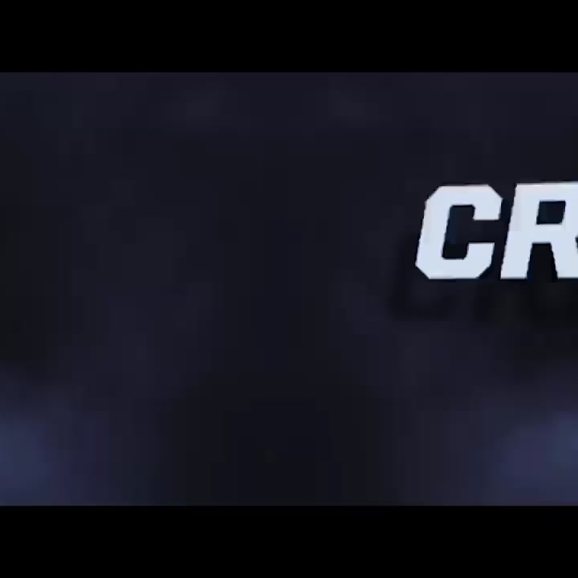
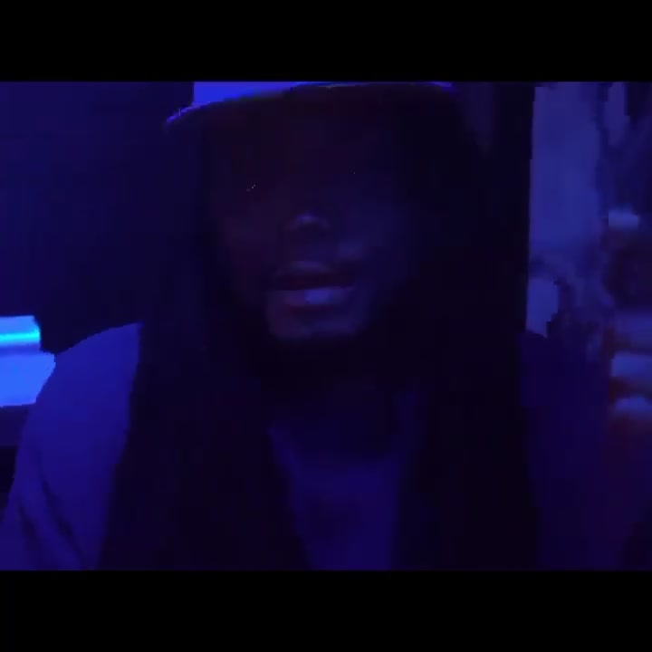
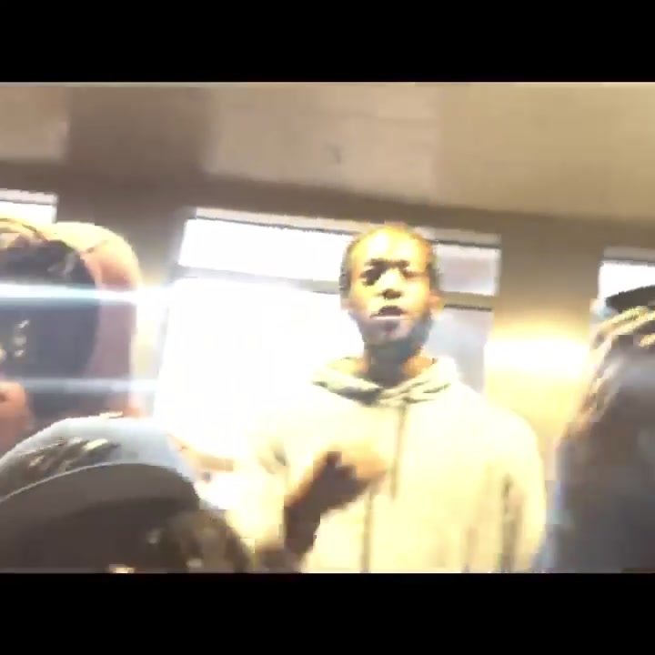
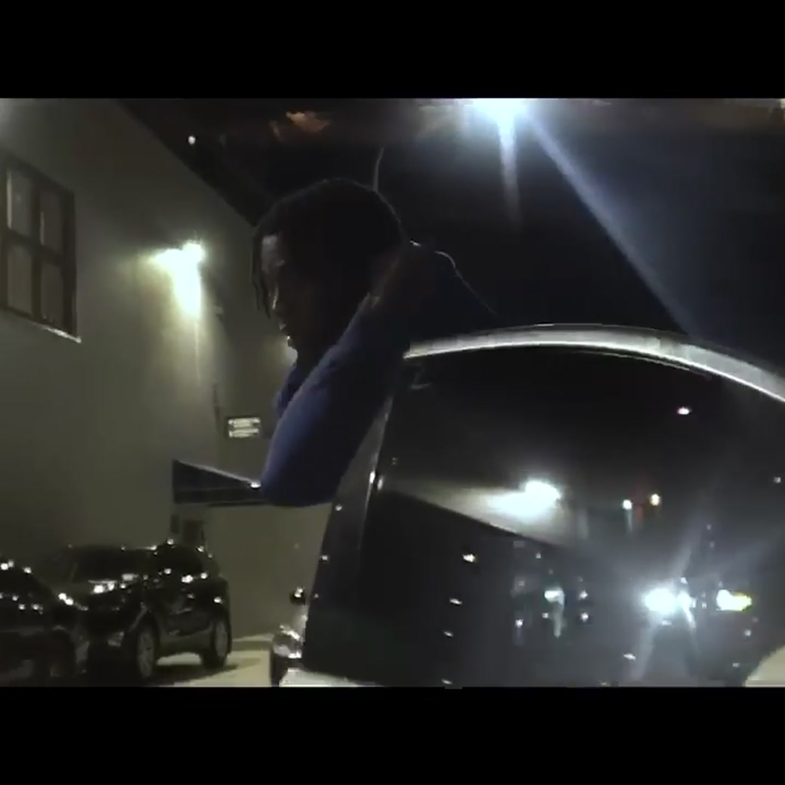

Harlem, New York · after dark
Harlem Chranch
LIL CUZZ—your digital day one, built in Harlem and moving at city speed.
Watch the filmThirty-five seconds uptown
Pick a
moment.
38ST / MOTION MARK 001
Blue runs
through it.
A second signal from the same world—chrome, roses, webs, and Uptown pressure.
Built uptown · thinking forward
Street instinct.
Future in motion.
No corporate voice. No clean-room personality. LIL CUZZ moves like family—quick with the answer, real with the energy.
UPTOWN / ALL DAY
212°
Creativity without permission.



LIL CUZZ / THE DAY ONE
Made to
move with you.
Ideas, moves, answers, and whatever comes next. Fast when it needs to be. Honest when it matters.
HARLEM, NEW YORKEST. 2026
The first visual
Outside.
No filter.
Watch the latest Chranch NYC visual and subscribe for what comes next.
Open on YouTube ↗
FILM 001 / 00:35The signal stays on